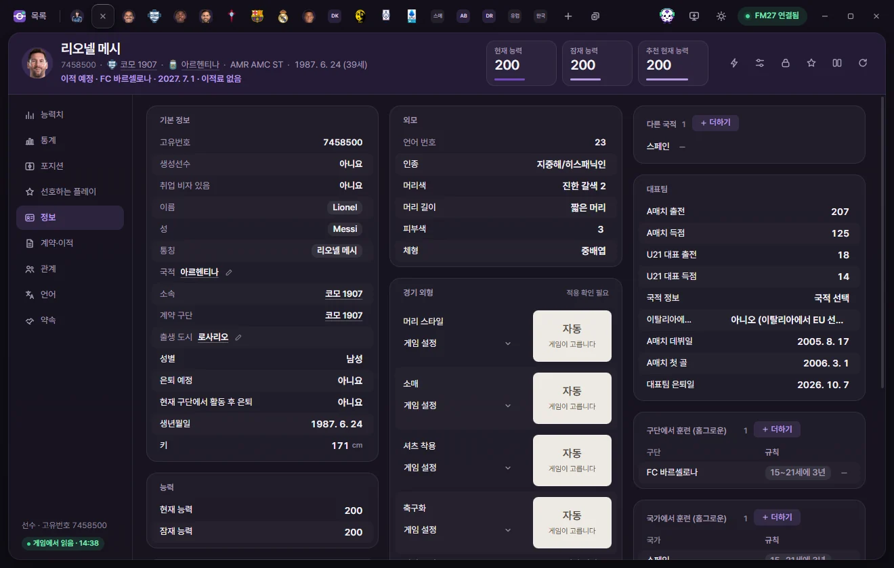

Tools
Changing gender
How to change a player's gender to female and use 'Keep men’s team eligibility' so she can keep playing for men's clubs and men's national teams.
Where to change it
Change it in Player tab › Info › Gender (Male / Female) under Overview. Always change gender one player at a time from a player tab—backup confirmation and Men’s team eligibility are handled together there.
- Open a player tab and click Info on the left.
- Click Gender and choose Female. Directly underneath, a Men’s team eligibility row appears, switched on as 'Keep'.
- Click Save at the top or press Ctrl+S.
- FMAX asks 'Have you backed up your save?' for the first time. Back up your save file separately, then click Yes, backed up.
- Once the 'Name: Female · Keep men’s team eligibility' notification appears, you're done.


Keep men’s team eligibility
Football Manager normally bars female players from Men’s clubs and men's National Team squads. Setting Men’s team eligibility to 'Keep' adjusts the game's live rules so that club and national-team eligibility checks—as well as player lists—count her alongside Male players, while her Gender value remains Female.
Men’s team eligibility row
This row sits directly beneath Gender. Its options are Keep / Never, and the coloured dot beside it shows the live status.
| Dot | Meaning |
|---|---|
| Green | Active in the game right now |
| Grey | Switched off in Live tweaks, or waiting to apply once connected to the game |
| Orange | Could not be applied to the game. Check Live tweaks to see why |
- Players who were already female in the database (Female players) see this row too. Change 'Never' to 'Keep' and save to make her eligible for men's teams as well.
- For a female player already set to 'Keep', you cannot turn this row off by itself. Change Gender above back to Male and save, and Men’s team eligibility turns off with it.
'Keep men’s team eligibility' in Live tweaks
In Live tweaks on the left sidebar, look under the Player section for Keep men’s team eligibility.
- Lists every player changed to female in the Current save. Each player shows 'Active', 'Applied · Still in the women’s player list', or 'Not in this game', along with an Open button that jumps straight to her Info tab.
- A single master switch turns the rule on or off for every listed player. Each save keeps its own player list, while the master switch applies across all saves.
- Turning the switch off asks for confirmation and then restores the game's original rules. The players remain female and stay on the list so you can turn the rule back on anytime.

What the background helper does
A windowless FMAX background helper maintains the Men’s team eligibility rules. FMAX launches this helper automatically the first time you change a player's gender or turn the rule on.
- The helper reads the player list saved in FMAX and applies the rules to the game whenever the switch is on.
- Even if you close the FMAX window, the helper keeps running to hold the rules in place. If you quit and relaunch the game, it applies the rules to the new game session before you load your save, so player lists are right from the start.
- After restarting your PC, open FMAX and connect to the game once to reactivate it.
- Turning off the switch in Live tweaks tells the helper to restore the game's original rules.
- Turning off Restore previous state when reopening FMAX in Settings switches this off and restores the original rules the next time you open FMAX.
- If a game update changes the code from what FMAX expects, the helper stops cleanly without applying the rules. It never modifies your save files or your game installation files on disk.
When you need to reload your save
Football Manager builds its Male players and Female players lists at the moment a save is loaded. If the rules were applied after the save was already open, a player can still be sitting in the women's list. Reload your save once in the game in any of these cases:
- A notification or Live tweaks says 'Reload your save once to include them in the men’s player list'
- A player's row in Live tweaks reads 'Applied · Still in the women’s player list'
- You loaded your save while the helper wasn't running (for example, after rebooting your PC before opening FMAX)
- You turned off Keep men’s team eligibility and plan to keep playing
Troubleshooting
| Message on screen | What to do |
|---|---|
| The game was busy at that moment | Pause the game and try again |
| That part of the game differs from what FMAX expects | FMAX may have closed unexpectedly, or another tool may have modified the same spot. Quit the game completely, restart it, and try again |
| Running in read-only mode, so nothing is written to the game | Start FMAX normally |
| This game version is different from what FMAX knows | Cannot be used until an FMAX update supporting your Game version is released |
| Please change gender one player at a time on the player screen | You haven't completed Check backup yet. Change one player in a player tab first to finish confirming |
Moving to Men’s clubs and call-ups to men's national teams have been verified. Signing contracts through normal transfer negotiations, playing in international matches, and winning awards have not yet been verified to work identically to Male players.